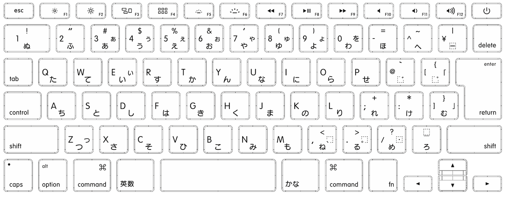
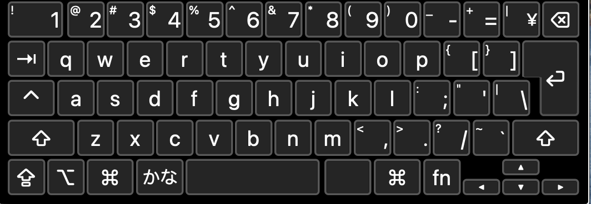

Typing English on a Japanese Hardware Keyboard
The Japanese Keyboard has both Japanese and English characters printed on the keys, but the location of some very common symbols, for example @ ' " ; : [ ] { } , is a lot different (see image below) than what is on the US keyboard. If you use the "US" Input Source with a Japanese keyboard, it will conform to how the Japanese keyboard is printed. If you learned to touch type on a US keyboard, adjustment may be difficult.
A fix for this is to use the Australian Input Source instead of US. It will place those symbols pretty much where your fingers expect to find them. The same fix may be useful if you have a US keyboard which for some reason your machine mistakenly thinks is JIS/Japanese.
If there are other changes you want in the mapping that gets used with the Japanese keyboard, you can make a custom layout with Ukelele. Be sure to set Keyboard Type in Ukelele to JIS when you edit the map.
Japanese Keyboard Printing

Australian Input Source Mapping
